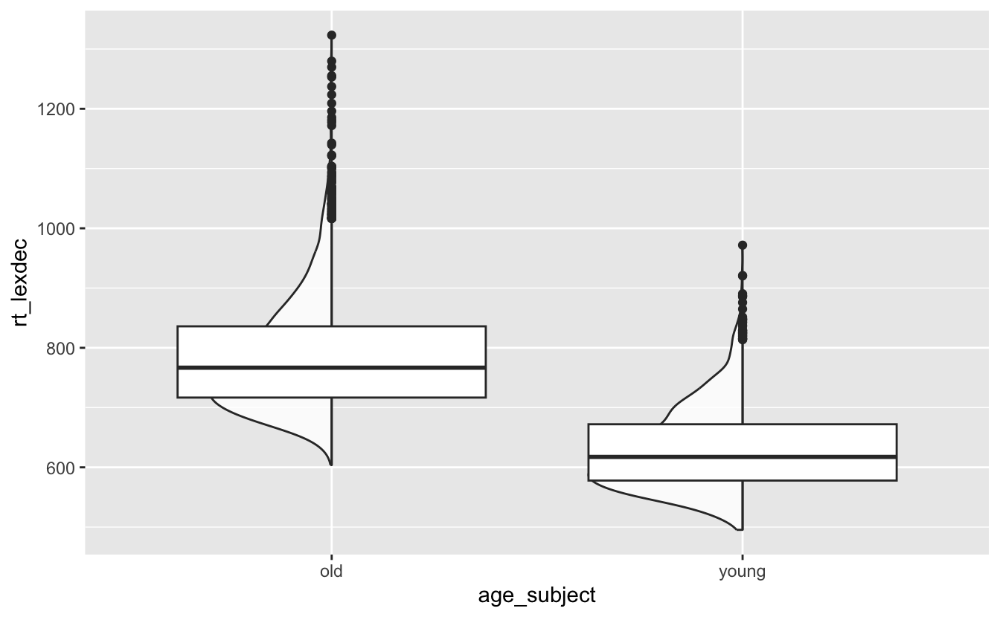
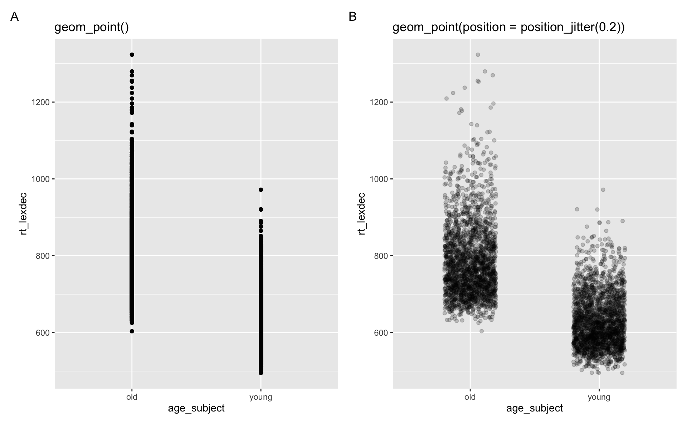
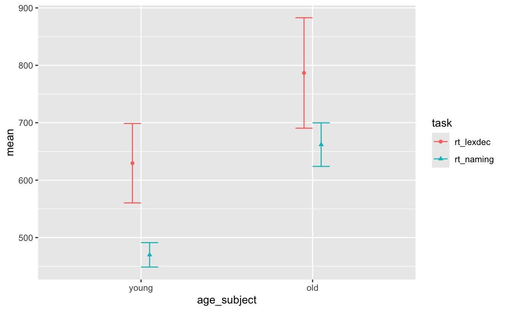
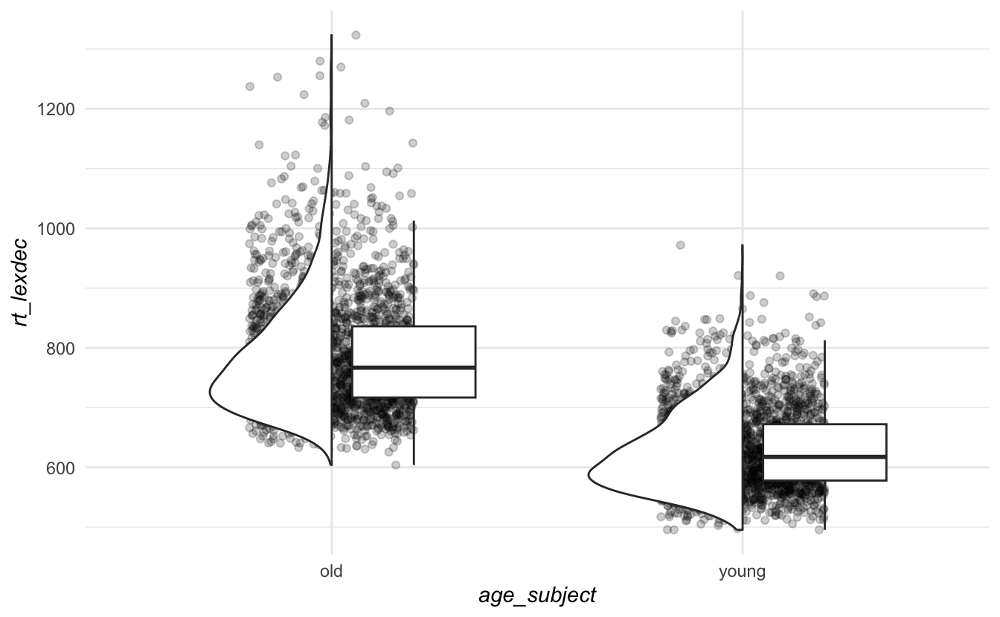

pacman::p_load(tidyverse,
here,
janitor,
ggthemes,
patchwork,
gghalves
)13 Datenvisualiserung 4
Mehrteilige Plots und Anpassungen
Lesungen
Für weitere Lektüre und Übungen zu diesem Thema empfehle ich die Lektüre von Abschnitt 11.5 (Kommunikation: Themen) in Wickham et al. (2023) und Kapitel 4 (Darstellung von zusammenfassenden Statistiken) in Nordmann et al. (2022).
Lernziele
In diesem Abschnitt werden wir lernen
- mehrteilige Diagramme zu erstellen
- die Position von Geomen anzupassen
- unsere Diagramme für eine bessere Datenkommunikation anzupassen
Einrichten
Pakete
Heute laden wir unsere relevanten tidyverse-Pakete direkt: dplyr und ggplot. Dies sind die einzigen Pakete, die uns beim Laden unserer Daten helfen. Wir laden auch das here-Paket und das janitor-Paket, das für das Aufräumen unserer Daten nützlich ist (z.B. die Funktion clean_names()). Um unsere Diagramme anzupassen, verwenden wir auch die Pakete ggthemes und patchwork. Ersteres hilft uns bei der Erstellung von farbenblindenfreundlichen Plots, während letzteres uns erlaubt, mehrere Plots zusammen zu drucken. Wir brauchen auch ein neues Paket: gghalves.
Daten
Wir arbeiten wieder mit unserer leicht veränderten Version des english-Datensatzes aus dem Paket languageR.
df_eng <- read_csv(
here(
"daten",
"languageR_english.csv"
)
) |>
clean_names() |>
rename(
rt_lexdec = r_tlexdec,
rt_naming = r_tnaming
)13.1 Ausweichende Dichteplots
Wir können Dichteplots entlang einer katgorischen Variable erstellen, indem wir geom_half_violin() aus dem Paket gghalves verwenden.
df_eng %>%
ggplot() +
aes(x = age_subject, y = rt_lexdec) +
geom_half_violin(alpha = .8)gghalves::geom_half_violin()13.1.1 Hinzufügen eines Boxplots
Wir können auch ein weiteres Geom hinzufügen, um dem Diagramm weitere Informationen hinzuzufügen. Fügen wir einen Boxplot hinzu.
df_eng %>%
ggplot() +
aes(x = age_subject, y = rt_lexdec) +
geom_half_violin(alpha = .8) +
geom_boxplot()
13.1.2 position_nudge()
Vielleicht wollen wir den Boxplot so verschieben, dass er nicht über den Dichteplots liegt und nicht ganz so breit ist. Wir können dies tun, indem wir position auf position_nudge() und width auf einen Wert kleiner als .75 setzen, was die Standardbreite ist.
df_eng %>%
ggplot() +
aes(x = age_subject, y = rt_lexdec) +
geom_half_violin(alpha = .8) +
geom_boxplot(width = .3, # make less wide
position = position_nudge(x=0.2)
)13.1.3 position_jitter() für Scatterplots
Dies gehört zu einer Familie von Optionen, mit denen man die Position von Geomen verändern kann. Zum Beispiel zeigen Abbildung 13.4 A und B beide genau die gleichen Daten, aber Abbildung 13.4 B enthält position = position_jitter(0.2), um überlappende Punkte zu verschieben. Auf diese Weise erhalten wir eine gute Vorstellung davon, wie viele Beobachtungen es über die Reaktionszeiten hinweg gab (y-Achse).
Code
df_eng |>
ggplot() +
aes(x = age_subject, y = rt_lexdec) +
geom_point() +
labs(title = "geom_point()") +
df_eng |>
ggplot() +
aes(x = age_subject, y = rt_lexdec) +
geom_point(position = position_jitter(0.2),
alpha = 0.2)+
labs(title = "geom_point(position = position_jitter(0.2))") +
plot_annotation(tag_levels = "A")
13.1.4 Kombiniert alle drei
Wenn wir alle diese Diagramme zusammenfügen, erhalten wir eine Abbildung 13.5.
Code
fig_no_colour <-
df_eng %>%
ggplot() +
aes(x = age_subject, y = rt_lexdec) +
geom_point(position = position_jitter(0.2),
alpha = 0.2) +
geom_half_violin() +
geom_boxplot(
outlier.shape = NA,
width = .3,
position = position_nudge(x=0.2)) 13.2 Positionierung von Fehlerbalkenplots
Im zweiten Bericht haben Sie Fehlerbalkenplots erstellt, aber die Fehlerbalken haben sich überschnitten.

13.2.1 pivot_longer() |> summarise()
Lassen Sie uns etwas Ähnliches mit dem Datensatz “Englisch” nachstellen. Zuerst werden wir pivot_longer() verwenden, um unsere Daten zu verlängern, dann erstellen wir eine Zusammenfassung der Reaktionszeiten für die lexikalische Entscheidungsaufgabe und die Benennungsaufgabe pro Altersgruppe.
sum_eng <-
df_eng |>
pivot_longer(
cols = c(rt_lexdec, rt_naming),
names_to = "task",
values_to = "rt"
) |>
summarise(
mean = mean(rt, na.rm = T),
sd = sd(rt, na.rm = T),
.by = c(age_subject, task)
) |>
mutate(age_subject = factor(age_subject, levels = c("young", "old"))) 13.2.2 Überlappende Fehlerbalken
Wenn wir für diese Daten ein Fehlerbalken-Diagramm erstellen, erhalten wir Abbildung 13.7.
sum_eng |>
ggplot() +
aes(x = age_subject, y = mean, colour = task, shape = task) +
geom_point() +
geom_errorbar(aes(ymin = mean-sd, ymax = mean+sd))13.2.3 position_dodge()
Wir können position = position_dodge(0.2) hinzufügen, damit sich die Fehlerbalken nicht überlappen. Wir werden auch ihre width anpassen, damit sie nicht so breit sind (jeder Wert unter 0.75).
sum_eng |>
ggplot() +
aes(x = age_subject, y = mean, colour = task, shape = task) +
geom_point() +
geom_errorbar(aes(ymin = mean-sd, ymax = mean+sd),
position = position_dodge(0.2),
width = 0.2)13.2.4 Ausweichen vor allen relevanten Geomen
Aber jetzt haben wir die Punkte hinter uns gelassen. Wir müssen auch den Punkten ausweichen, also fügen wir position_dodge() zu geom_point() hinzu und stellen sicher, dass wir den gleichen Wert wie bei geom_errorbar() verwenden.
sum_eng |>
ggplot() +
aes(x = age_subject, y = mean, colour = task, shape = task) +
geom_point(position = position_dodge(0.2)) +
geom_errorbar(aes(ymin = mean-sd, ymax = mean+sd),
position = position_dodge(0.2),
width = 0.2)
13.3 Anpassungen
Welche Anpassungen sehen Sie in den Diagrammen in Abbildung 13.10?
Code
fig_dens_colour <-
df_eng %>%
ggplot(aes(x = age_subject, y = rt_lexdec, )) +
geom_point(
color = "grey",
position = position_jitter(0.2),
alpha = 0.2) +
geom_half_violin(
aes(fill = age_subject)) +
geom_boxplot(
outlier.shape = NA,
aes(color = age_subject),
width = .3,
position = position_nudge(x=0.2)) +
labs(title = "Distribution of reaction times",
x = "Age group",
y = "LDT reaction time (ms)",
fill = "Age group") +
scale_color_colorblind() +
scale_fill_colorblind() +
theme_minimal() +
theme(legend.position = "none")
fig_point_colour <-
df_eng %>%
ggplot(aes(x = age_subject, y = rt_lexdec, )) +
geom_point(
aes(color = age_subject),
position = position_jitter(0.2),
alpha = 0.2) +
geom_half_violin() +
geom_boxplot(
outlier.shape = NA,
# aes(color = age_subject),
width = .3,
position = position_nudge(x=0.2)) +
labs(title = "Distribution of reaction times",
x = "Age group",
y = "LDT reaction time (ms)",
fill = "Age group") +
scale_color_colorblind() +
scale_fill_colorblind() +
theme_minimal() +
theme(legend.position = "none")
fig_default <-
sum_eng %>%
ggplot(aes(x = age_subject, y = mean,
colour = task, shape = task)) +
geom_point() +
geom_errorbar(aes(ymin=mean-sd,ymax=mean+sd))
fig_custom <-
sum_eng %>%
mutate(task = fct_recode(task,
"LDT" = "rt_lexdec",
"Naming" = "rt_naming"),
age_subject = fct_recode(age_subject,
"Young" = "young",
"Old" = "old")) |>
ggplot(aes(x = age_subject, y = mean,
colour = task, shape = task)) +
geom_point(position = position_dodge(0.3),
size = 3) +
geom_errorbar(aes(ymin=mean-sd,ymax=mean+sd),
position = position_dodge(0.3),
width = .3) +
geom_line(aes(group = task,
linetype = task),
position = position_dodge(0.3)) +
theme_minimal() +
labs(
title = "Reaction times per group and task",
x = "Age group",
y = "Reaction time (ms)",
colour = "Task",
shape = "Task",
linetype = "Task"
) +
theme(axis.title = element_text(size = 12,
face = "bold"),
plot.title = element_text(size = 14),
legend.title = element_text(face = "bold"))13.3.1 Standardthemen
Zunächst wurde theme_minimal() zu jedem Plot hinzugefügt, um das allgemeine Aussehen anzupassen. Es gibt eine Vielzahl von benutzerdefinierten Themen, wie theme_bw() oder theme_classic(). Probieren Sie sie aus.
13.3.2 theme()
Wir können auch einzelne Komponenten des Themas steuern, indem wir Anpassungen mit theme() hinzufügen. Zum Beispiel sehen wir in Abbildung 13.10 A, dass die Achsentitel fett gedruckt sind. Dies wurde durch Hinzufügen von theme(axis.title = element_text(face = "bold)) erreicht, wobei axis.title = anzeigt, dass wir eine Änderung an den Achsentiteln vornehmen wollen, element_text() zeigt an, dass es ihr Text ist, den wir ändern wollen, und face = "bold" zeigt an, dass wir den Text fett machen wollen. Dasselbe wurde für legend.title = gemacht, um den Titel der Legende fett zu machen.
# italicize axis titles
fig_no_colour + theme_minimal() +
theme(
axis.title = element_text(face = "italic")
)
Heutige Ziele 🏁
Wir haben gelernt, wie man…
- mehrteilige Plots erstellen ✅
- die Position von Geomen anzupassen ✅
- unsere Plots für eine bessere Datenkommunikation anpassen ✅
13.4 Aufgaben
Mehrteilige Darstellung. Erzeugen von Abbildung 13.9 und Abbildung 13.5 für
rt_naming(anstelle vonrt_lexdec). Drucken der Plots nebeneinander mitpatchwork.Beschriftungen. Benutzen Sie
labs(), um Beschriftungen für den Titel, die x- und y-Achse und für die von Ihnen verwendete Ästhetik (Form, Farbe, etc.) hinzuzufügen, die in einer Legende resultieren. Dies sollte damit enden, dass der Titel der Legende auch einen eigenen Namen erhält.Anpassungen. Fügen Sie den beiden Diagrammen Anpassungen hinzu, indem Sie ein Standardthema wählen, gefolgt von
theme()mit Anpassungen für die Achsentitel, den Legendentitel und den Diagrammtitel. Sie könnenface,size,colour,family(d.h. Schriftart) ändern. Sie können?themein der Konsole eingeben oder googeln, um einige Ideen zu bekommen. Wenn Sie sich nicht kreativ fühlen, versuchen Sie einfach, eine der Anpassungen zu replizieren, die Sie in Abbildung 13.10 sehen
Session Info
Hergestellt mit R version 4.3.0 (2023-04-21) (Already Tomorrow) und RStudioversion 2023.3.0.386 (Cherry Blossom).
print(sessionInfo(),locale = F)R version 4.3.0 (2023-04-21)
Platform: aarch64-apple-darwin20 (64-bit)
Running under: macOS Ventura 13.2.1
Matrix products: default
BLAS: /Library/Frameworks/R.framework/Versions/4.3-arm64/Resources/lib/libRblas.0.dylib
LAPACK: /Library/Frameworks/R.framework/Versions/4.3-arm64/Resources/lib/libRlapack.dylib; LAPACK version 3.11.0
attached base packages:
[1] stats graphics grDevices utils datasets methods base
other attached packages:
[1] magick_2.7.4 gghalves_0.1.4 patchwork_1.1.3 ggthemes_4.2.4
[5] janitor_2.2.0 here_1.0.1 lubridate_1.9.2 forcats_1.0.0
[9] stringr_1.5.0 dplyr_1.1.3 purrr_1.0.2 readr_2.1.4
[13] tidyr_1.3.0 tibble_3.2.1 ggplot2_3.4.3 tidyverse_2.0.0
loaded via a namespace (and not attached):
[1] utf8_1.2.3 generics_0.1.3 stringi_1.7.12 hms_1.1.3
[5] digest_0.6.33 magrittr_2.0.3 evaluate_0.21 grid_4.3.0
[9] timechange_0.2.0 fastmap_1.1.1 rprojroot_2.0.3 jsonlite_1.8.7
[13] fansi_1.0.4 scales_1.2.1 cli_3.6.1 crayon_1.5.2
[17] rlang_1.1.3 bit64_4.0.5 munsell_0.5.0 withr_2.5.0
[21] yaml_2.3.7 parallel_4.3.0 tools_4.3.0 tzdb_0.4.0
[25] colorspace_2.1-0 pacman_0.5.1 vctrs_0.6.3 R6_2.5.1
[29] lifecycle_1.0.3 snakecase_0.11.0 bit_4.0.5 htmlwidgets_1.6.2
[33] vroom_1.6.3 pkgconfig_2.0.3 pillar_1.9.0 gtable_0.3.4
[37] glue_1.6.2 Rcpp_1.0.11 xfun_0.39 tidyselect_1.2.0
[41] rstudioapi_0.14 knitr_1.44 farver_2.1.1 htmltools_0.5.5
[45] labeling_0.4.3 rmarkdown_2.22 compiler_4.3.0